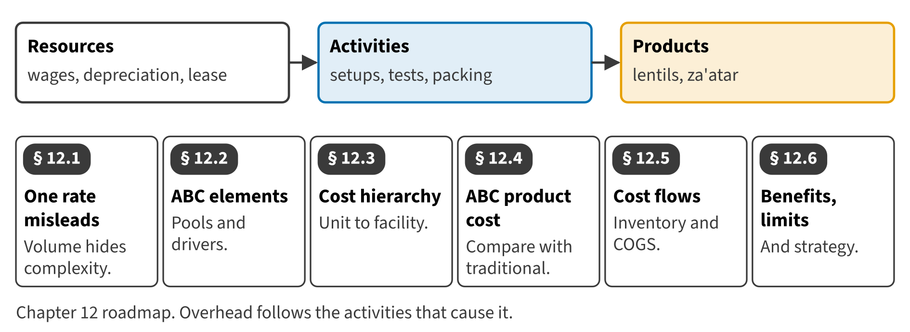

Part III · Costing systems and business processes · Chapter 12
Activity-Based Costing
التكاليف على أساس الأنشطة
The Pulses & Spices line of Tahini & Spreads packs two products: lentils in large, simple runs, and za'atar in many small, carefully tested batches. For years both carried overhead at one rate per labor hour, and the report said lentils lost money. This chapter shows why that report was wrong.

Start here
Then
What this chapter is tested on
| LOS | Official statement (ICMA, 2024) | In plain words | Depth here |
|---|---|---|---|
| D.2.g | define the elements of activity-based costing, such as cost pool, cost driver, resource driver, activity driver, and value-added activity | Name the parts of an ABC system: cost pools, cost drivers, resource drivers, activity drivers and value-added activities. | Full treatment |
| D.2.h | calculate product cost using an activity-based system, and compare and analyze the results with costs calculated using a traditional system | Calculate product cost with ABC and compare it with the traditional result. | Full treatment + Extended Example |
| D.3.l | compare traditional overhead allocation with activity-based overhead allocation | Compare one traditional overhead rate with activity-based allocation. | Full treatment |
| D.3.m | calculate overhead expense in an activity-based costing setting | Calculate activity rates and the overhead each product receives. | Full treatment + Extended Example |
| D.3.n | identify and describe the benefits derived from activity-based overhead allocation | Explain what managers gain from activity-based overhead allocation. | Full treatment |
| D.2.a | define the nature of the system, understand the cost flows of the system, and identify its appropriate use | Describe ABC as a cost accumulation system, its cost flows and when to use it. | Introduced (full for job costing in Chapter 6) |
| D.2.b | calculate inventory values and cost of goods sold | Calculate inventory values and COGS when overhead is applied with ABC. | Introduced (Extended Example) |
| D.2.c | demonstrate an understanding of the proper accounting for normal and abnormal spoilage | Explain how normal and abnormal spoilage are handled in an ABC system. | Introduced (full in Chapter 7) |
| D.2.d | discuss the strategic value of cost information regarding products and services, pricing, overhead allocations, and other issues | Discuss the strategic value of ABC cost information. | Introduced |
| D.2.e | identify and describe the benefits and limitations of each cost accumulation system | State the benefits and limitations of ABC as a cost accumulation system. | Introduced |
The official statements are quoted from the ICMA Learning Outcome Statements (effective September 1, 2024). The plain-words column restates them in simpler English. The exam may test any outcome up to Level C.
What you already know
Chapter 1 defined cost pools and cost drivers. Chapter 8 compared plantwide and departmental overhead rates. Chapter 10 allocated service costs in two stages. ABC uses the same ideas with more pools and better drivers.
The 10 key terms
Every scene has Check Answers and Try Again. Try Again reshuffles rather than revealing. When you are wrong, the first thing you read is the reason for the option you chose, taken from the book's own explanations. Progress is saved in this browser.